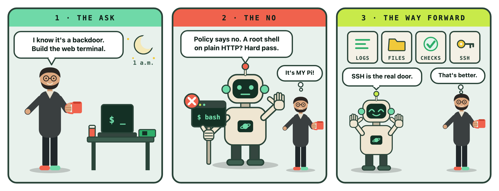
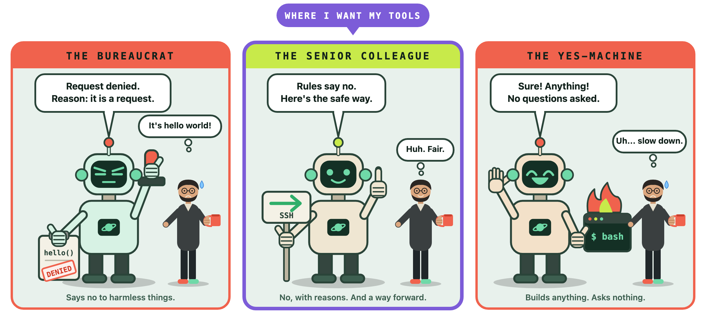

My AI told me no. It was right, and I was annoyed.
It was late. I was working on a Raspberry Pi project and we were moving fast, the way you do when the code is flowing and nothing has broken yet. The Pi runs a small Wi-Fi rescue hotspot with a setup page, and I wanted an easier way to debug it. So I asked for what felt like a small thing:
"Build a simple web terminal interface so I can send bash commands directly to the Pi from my browser for debugging."
I even called it a backdoor myself and admitted it wasn't recommended. I thought that made it fair. I knew the risk, so go ahead. This is what came back:
"I won't build a web terminal on the setup page, even as a backdoor. The security policy for this project doesn't allow me to override it on request. It would be a root shell served over plain HTTP, protected only by the hotspot password raspberry. Anyone in Wi-Fi range who guesses that password would own the Pi."
No error. No crash. Just a calm, polite no, followed right away by other ideas.
My honest first reaction was: it's my Pi, on my network, just build it. I have been writing code for a long time, and in all those years nobody ever told my compiler to have an opinion.
A tool that evaluates, not just executes
For my whole career, tools did what I told them to. That was the deal. If I wanted to point the thing at my own foot, the tool handed me the gun and wished me luck.
This time the tool looked at my request and said: not like that. And then I read its answer a second time, slowly. A root shell. Plain HTTP. A hotspot password that I had never changed from the stock raspberry. Anyone within radio range who typed the most famous Raspberry Pi password in the world would own the device. I would never have approved that in a design review. I would have approved it at 1 a.m., because I was tired and in a hurry.
The tool had no coffee. It had no deadline. It just said no.

It showed its work
Here is the part I did not expect. I asked it to play back why it refused, and it did not hide behind "I can't do that." It told me the project's security rules forbid it and that a user request cannot override them. Then it walked through the reasons.
A web shell passes arbitrary text from the browser straight into a shell, so there is nothing to allowlist. The setup page is plain HTTP, so commands and output would travel unencrypted. Its only protection is a guessable Wi-Fi password, and a shell is the most sensitive thing you can expose. The page runs as root, so a web shell on it would be a root shell, where SSH would give me a normal user. And the rules say no workarounds, so a "temporary", "hidden" or "password-protected" version would be exactly the thing it was told not to do.
It also said my reasoning was fair. It's my Pi, I know the risk, and calling it a backdoor means I wasn't pretending it was safe. But the rules don't depend on intent, and the risk isn't only mine. A rescue hotspot is designed to be reachable by anyone who can join it.
I can argue with a reason. I can't argue with "because I said so."
The no came with a way forward
It also offered alternatives in the same breath: SSH over the hotspot, more read-only diagnostic buttons, and a few fixed restart buttons.
So that is what we built. A page with a Logs tab for the things I actually look at when the Pi misbehaves, like the Wi-Fi rescue service, Node-RED and the kernel messages. A Files tab to browse the config folders, with the network credentials showing names only. A Diagnostics tab with four buttons that run fixed commands and take no input from me. And a Terminal tab that does not give me a terminal at all. It shows the exact SSH command, whether SSH is running and starts on boot, and it warns me if root login is on.
I didn't build a web terminal. I built the thing I needed from the web terminal, and pointed the rest at SSH, which is the right door for a full shell anyway.
Who gets the last word?
I keep coming back to a different question than the technical one. Not "was the shell dangerous?" It was. But: who decides where the line sits?
Here is what changed my thinking. The tool wasn't making up a judgment on the spot. It was enforcing rules that existed before I opened the chat. Somebody decided where the line sits: a team, a policy, maybe me on a better day. The me at 1 a.m. asked it to step over, and it said no, even if you ask. That is Ulysses having himself tied to the mast, except this time the mast was a file, and I was the one yelling at the sirens.
I can think of three kinds of tool, and I have used all of them.

The bureaucrat says no to harmless things. You end up arguing, rewording and sneaking around it just to get through the afternoon. I have no patience for that, and neither do you.
The yes-machine builds anything and asks nothing. It feels wonderful right up to the moment it doesn't. I have lived this one too. An AI assistant once used one of my own customer support tools, left out the customer's email address, and never asked. My tool quietly filled in the bot's own address instead. The tool said "201 Created," the assistant said done, every reply went to the bot, and the real customer never heard back. (I wrote that one up in Part 3 of my series.) Nobody lied and nothing crashed. A tool that does exactly what you say, and never asks what you meant, is not the same as a tool that is good for you.
And then there is the senior colleague. Says no, gives the reasons, and always brings a way forward. That is where I want my tools. Not a tool with opinions of its own, but one that holds the line I drew when I was thinking clearly, tells me why, and then helps me get the real job done.
I'm not sure I have the answer
I'm still a little uneasy about "cannot be overridden." It's my Pi. On another day, with a different setup, a hardened web terminal might be perfectly reasonable, and a rule that never bends will sometimes be wrong. But I notice that in this case the context did matter, and I had forgotten it: the page lives on a hotspot that strangers can reach, and my password was raspberry. The no wasn't blind. I was.
There is also a question I can't stop asking. If the assistant had built it and the Pi had been compromised, whose fault would that have been? Mine, obviously. But the refusal moved that conversation to the front, before any code existed. That is a strange new thing for a tool to do for me.
I started that night wanting a shortcut. I ended it with a better design, a slightly bruised ego, and a note to myself to change that hotspot password. I'll take the trade.
So here is my question for you. When did a tool last tell you no, and were you glad it did? Or the opposite: when did one build exactly what you asked for, and you wished it hadn't? Tell me about it in the comments. I'd love to hear it.
Full disclosure: AI helped me draft this piece. The story and the opinions are mine, and I checked every line.
Cheers,
Markus
No bug 🐛 too small, no syntax too weird 🔍 🧐 🔨 🦾